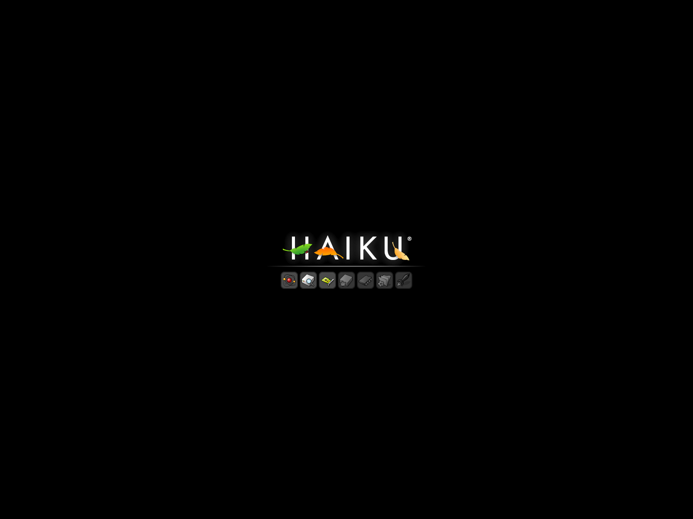
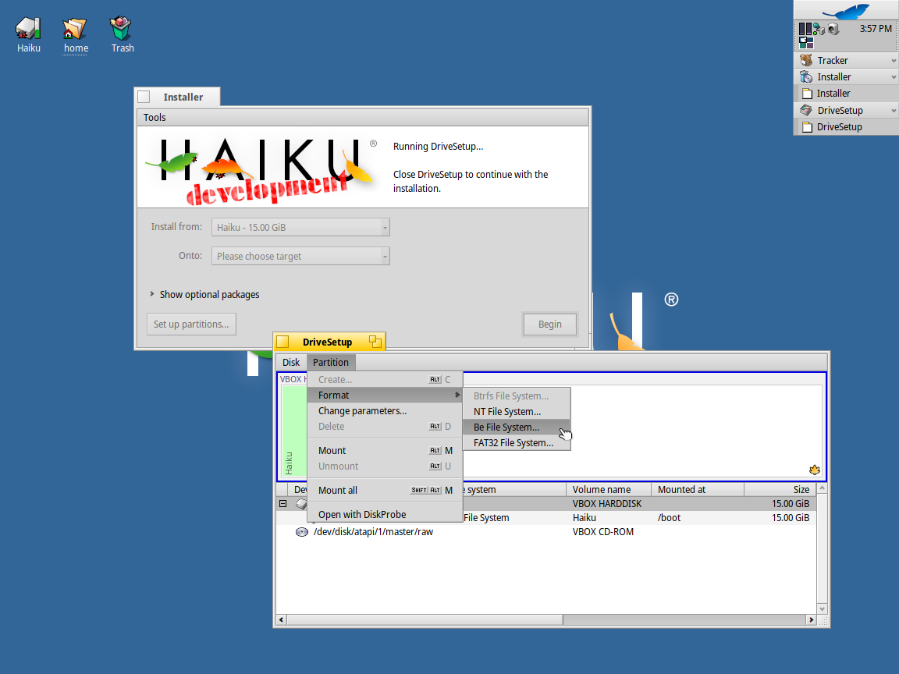
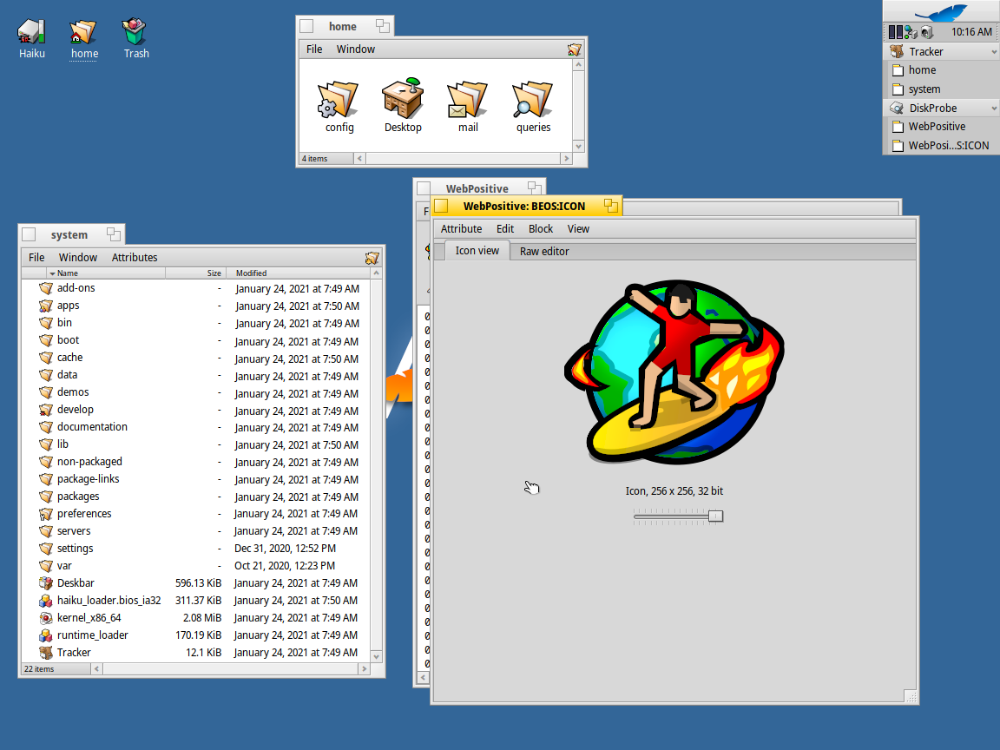

Содержание
Haiku — свободная операционная система для персональных компьютеров, первая версия которой нацелена на двоичную совместимость с операционной системой BeOS. В настоящее время международная группа разработчиков активно трудится над компонентами системы.
Haiku - это быстрая, эффективная, простая в использовании и экономичная операционная система с открытым исходным кодом, вдохновленная BeOS, которая специально предназначена для персональных компьютеров. Также, это название проекта, который занимается разработкой и продвижением операционной системы Haiku.
История
С закрытием разработки операционной системы BeOS и продажей всей её интеллектуальной собственности фирме Palm перед энтузиастами BeOS встала задача дальнейшего развития и существования этой операционной системы вообще. Поскольку система была во многом уникальной и передовой, её сторонники решили, дабы избежать юридических и технических проблем, переписать операционную систему BeOS с нуля, полностью под свободной лицензией, обеспечив максимально возможную двоичную совместимость с последней версией BeOS — 5.0.
Проект был основан в 2002 году Майклом Фипсом. Целью было полностью воссоздать последний официальный релиз BeOS R5.
Изначально проект назывался OpenBeOS (сокращенно OBOS), но позже, во избежание нарушения прав на торговую марку компании Palm, путём голосования было решено переименовать проект в Haiku.
В 2003 году была создана некоммерческая организация Haiku Inc., занимающаяся организационной частью проекта. Она контролирует развитие проекта, принимает пожертвования, а также обладает правами на торговую марку Haiku, логотип, веб-сайт и исходный код.
Техническая реализация
Haiku воплощает в себе основные идеи BeOS. Это модульная система, архитектурно решённая как гибридное ядро[4]: микроядерная архитектура, способная динамически подгружать необходимые модули. Сетевой стек работает в режиме ядра, но в целях двоичной совместимости с BeOS R5 имеет также интерфейс в пользовательской области памяти.
Ядро Haiku — NewOS — написано бывшим инженером Be Inc. Тревисом Гейсельбрехтом и полностью совместимо с приложениями своего оригинала — BeOS R5.
Одна из отличительных особенностей системы — архитектура трансляторов — системных интерпретаторов файловых форматов (например, JPEG). Кроме того, Haiku продолжает традиции BeOS по активному использованию файловых мета-атрибутов, что позволяет реализовать работу с данными простыми и очевидными методами
Файловая система OpenBFS поддерживает расширенные атрибуты файлов, журналирование, 64-разрядные указатели, поддержку хранения мета-тегов, максимальный размер файла — 260 гигабайт, раздела — 2 эксабайта.
Управление пакетами
По состоянию на сентябрь 2013 года, Haiku включает в себя систему управления пакетами программного обеспечения, позволяющую собирать пакеты и отслеживать в них зависимости. Разрешение зависимостей пакетов выполняется с помощью библиотеки libsolv из проекта openSUSE. Пакеты могут быть установлены из удаленных репозиториев с помощью утилиты pkgman, или посредством перемещения уже скачанного пакета в специальный каталог packages. Система управления пакетами Haiku монтирует активированный пакет в системный каталог в режиме «только чтение».
Haiku vs Linux
Дистрибутивы на основе Linux объединяют программное обеспечение - ядро Linux, систему X Window и различные DE с разными инструментами, такими как GTK + и Qt, - которые не обязательно разделяют одни и те же принципы и / или цели. Это отсутствие согласованности и общего видения проявляется в повышенной сложности, недостаточной интеграции и неэффективных решениях, что усложняет использование вашего компьютера
Вместо этого Haiku уделяет особое внимание персональным вычислениям и руководствуется единым видением всей ОС. По мнению разработчиков, что это позволяет Haiku предоставлять более компактную, чистую и эффективную систему, способную обеспечить лучший пользовательский интерфейс, который является простым и единообразным во всем. Haiku не является дистрибутивом Linux и не использует ядро Linux.
Be File System (BFS)
Be File System (BFS) - это собственная файловая система для BeOS. В ядре Linux она называется «BeFS», чтобы не путать её с загрузочной файловой системой.
BFS была разработана Домиником Джампаоло и Сирилом Мерильоном в течение десяти месяцев, начиная с сентября 1996 года, чтобы предоставить BeOS современную 64-битную журналируемую файловую систему. Она чувствительна к регистру и может использоваться на гибких дисках, жестких дисках и носителях только для чтения, таких как CD-ROM. Однако её использование на небольших съёмных носителях не рекомендуется, поскольку заголовки файловой системы занимают от 600 КБ до 2 МБ, что делает дискеты практически бесполезными.
Как и её предшественник, OFS (Old Be File System, написанная Бенуа Шиллингсом - ранее BFS), она включает поддержку расширенных атрибутов файлов (метаданных) с характеристиками индексирования и запросов для обеспечения функциональности, аналогичной функциям реляционной базы данных.
Хотя эта файловая система задумывалась как 64-битная, размер некоторых структур на диске показывает, что практический предел размера составляет примерно 2 эксабайта. Точно так же распределение файлов на основе экстентов уменьшает максимальный практический размер файла в лучшем случае примерно до 260 гигабайт и всего до нескольких блоков в худшем случае, в зависимости от степени фрагментации.
Процесс проектирования, интерфейс прикладного программирования и внутренняя работа по большей части описаны в книге "Practical File System Design with the Be File System".
Ссылки
- Haiku: haiku-os.org/
- Github: github.com/haiku/haiku